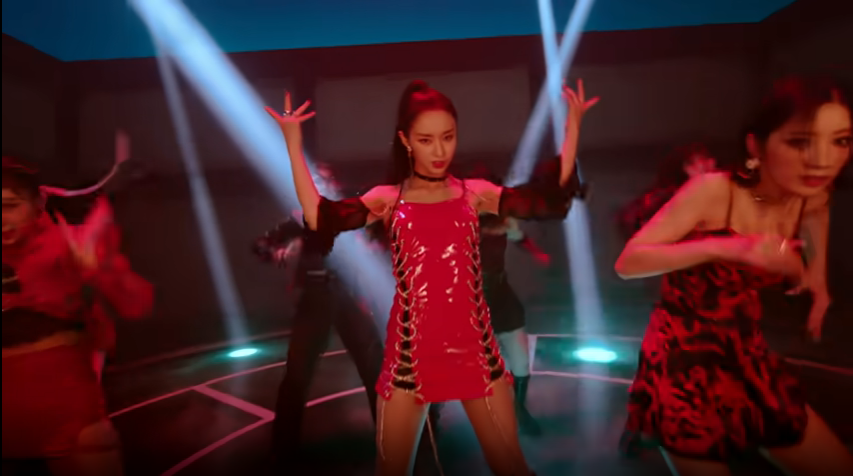
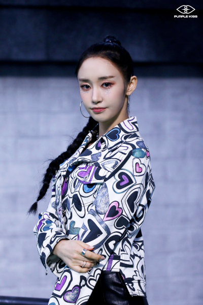
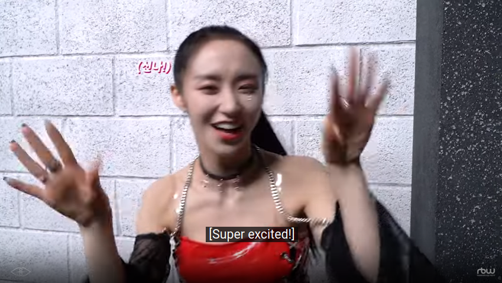
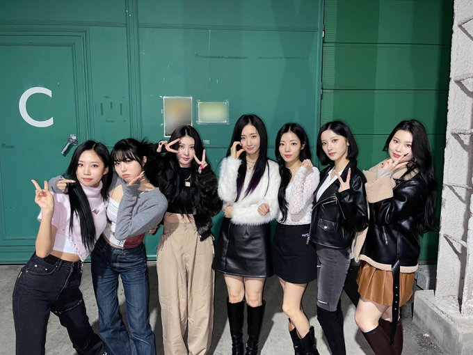

Purple Kiss’s Park Jieun, Joy, and Meta Kpop Idols
Note: all images on this page are either from official Purple Kiss social channels or screenshots from PK video content.
I must admit: I didn’t get it at first.
The charms of the other members of Purple Kiss were immediately obvious to me.
Swan’s unique voice drew me in from the intial teaser for their debut. And then, of course, from there: Yuki’s rapping, Goeun’s powerful main vocals, Ireh and Dosie’s charismatic performance, and Chaein’s obvious all-rounder-ness (and ability to self-produce).
But I didn’t quite get Jieun.
I’m not saying she isn’t talented.
She most definitely is. She a good singer, a very good dancer, and can rap. She has her own charisma and can produce highly charismatic moments on stage.
But she doesn’t have the obvious top tier talents of the other members of the group. Which is less a comment about her, and more about how obviously and uniquely strong the other members of Purple Kiss are at their specific thing.
As I encountered more Purple Kiss fans in kpop spaces, I noticed there was a certain cheerleading for her that I interpreted as being born out of a desire to protect and hype up Jieun.
I thought everybody was just being nice.
I was wrong about that.
This essay is both a mea culpa and a celebration of what makes Park Jieun a unique, electrifying kpop idol in her own right.
But first, we need to talk about two things:
- The nature of meta
- How meta gets expressed by kpop idols
WHAT IS META
In the context of cultural criticism, when we talk about meta we’re not talking about the metaverse or something like that. Not that they aren’t related, but the metaverse mostly gets talked about in bullshit techno utopian terms, borrowing the terminology, but (like capitalism always does) using it try to own a technology and brand space.
But meta is actually anything that shows that it’s aware of itself. That points beyond what it is. That directly comments on the category in which it is in.
When it comes to cultural production, especially narrative forms of art, meta works are those that have moments that point to the fact that they are narratives with specific genre conventions and/or are within a specific medium (like film, games, animation, or fiction).
To borrow a wrestling term, meta breaks kayfabe. They smash the illusion that they are this seamless, isolated product. Perhaps paradoxically, at the same time by engaging in meta, they reinforce that they are what they are.
Meta can occur in many forms. It isn’t necessarily negative or positive. It doesn’t have to be cynical, although that’s a common mode of meta.
It can be boring or interesting, predictable or unpredictable, subtle or obvious.
The most important thing is that it either is or isn’t present in a particular cultural work.
META AND KPOP IDOLS

The thing with kpop idols is that they are supposed to be idols. An avatar that fans can look up to — that fans can idolize.
And to maintain this illusion, kpop idols are supposed to present this unbroken surface of the ideal. They are supposed to be physically attractive, fashionable, talented, and have great personalities — able to sing, dance, perform with charisma, photograph well, connect with fans, and be cute, witty, and entertaining on vlives, social posts, and reality and variety shows.
But, of course, there’s no way anyone can be amazing at everything. And especially since idols find themselves in so many different situations there’s no way they can be completely on all the time.
And so, sometimes, they might let the idol facade slip a little bit.
Generally, that only makes them seem more human, more approachable, and it makes most fans love them even more—so long as those slippages are minor in nature, happen within certain boundaries, and are not frequent enough to suggest the idols might be having some serious issues going on.
Mostly, when it comes to all the various situations in which idols are required to perform, some idols just grin and bear it even if they aren’t feeling particularly on.
Some might be willing to show moments of weakness.
Some need to withdraw from public life for awhile because it all becomes too much.
But the way some idols handle the demands of the kpop industry is by going meta.
Doing so is a way to protect yourself because by pointing out the situation itself, you’re showing that you are aware of the genre conventions of whatever it is, and because of that awareness, you’re going to react on your terms — not on the terms of whatever is being demanded of you.
The two best examples I can think of based on the groups I’m familiar with are Olivia Hye (LOONA) and Ryujin (Itzy).
This especially occurs in variety shows when they’re asked to do something they think is stupid or silly or they’re just totally over it. And when it does, you’ll see them pull out a few moves that I consider meta.
They might roll their eyes. Or when everyone else is smiling, they will not be smiling or their smile will be that kind of dead smile that broadcasts that they’re complying but not really.
Or they will comment on the game they are being asked to play or talent or reaction they’re are supposed to show.
Or they will blatantly cheat (although sometimes you get entire groups who cheat so much it basically becomes part of the game—that’s the thing with games, if you go meta with them, then the meta-game just becomes the new form of the game itself).
Or they will try with the obvious intention to fail.
Or they will put on a some obviously fake positivity. At first they may look like “I don’t really want to do this”, but then they’ll turn a little switch and amp up the enthusiasm and energy in way that clearly shows they’re overcompensating as if to say, “I’m going to throw myself into this, and I’m going to be awesome at this, but I don’t really want to do it.”
And that’s one form of meta about being a kpop idol. The cool route.
And there are other forms. There are also those idols (more rare) who tend to be just very real and candid.
But Jiuen’s version of being meta in relation to being a kpop idol isn’t any of those I mentioned above.
She does something different, and it was noticing that, which led me to appreciate her and what she adds to Purple Kiss.
PARK JIUEN AND THE JOY OF BEING A KPOP IDOL

I started this essay by saying that I didn’t really get Jiuen.
I want to be clear that this is doesn’t reflect on who she is as a person or an idol. She is clearly very talented, and the other members of Purple Kiss clearly value and adore her.
I just wasn’t aware of everything she brought to the group when I first began following them.
Jiuen is totally worthy of being a kpop idol. But she does has the fortune and, perhaps, misfortune of being in a group of not just super talented other individuals but powerhouses with very unique characteristics who are all a bit extra in what they bring to being an idol.
In some ways, Jieun stands out in Purple Kiss because she is not them.
Again, I don’t want to downplay her abilities. She definitely has a role to play in the group and plays it well — as the oldest member, as a visual, as someone who, yes, doesn’t always gets a lot of lines, but can be deployed in flexible ways to round out the sound of each track and the flow and presentation of each MV and performance.
I think she does more than that.
Because here’s what I came to realize about Jieun after seeing her in Perky Holiday, Purple Kiss Playtime, performance stages, behind the scene videos, numerous variety show appearances, and more: she has these meta moments where she expresses a joy, and sometimes a little bit of awe, at all the cool things idols get to do.
Not just being impressed by her other members and what they do and reacting to that. A lot of other idols do that.
It’s more like, she’ll have these moments where you look at here and her reaction seems to be saying, “Look at how cool this is. Can you believe we get to be doing this?”
There’s this certain expression of joy and enthusiasm you get with Jieun that is, to use an overused word in the kpop world, refreshing.
We all know there are all sorts of issues with how kpop works—with how idols are trained and managed and all that.
But at the same time, what we love about kpop is the fact that we get to see these incredibly talented, hardworking individuals be able to express themselves in entertaining ways in so many different situations.
And so when you watch Jieun you become aware of not just what you’re watching, but a larger meta-narrative around how awesome, interesting, wild, and fun kpop can be.
Her meta is not one of coolness. It’s a distillation, an encapsulation of how fans feel.
Because Jieun isn’t afraid to express enthusiasm and does so in a way that isn’t the standard tension kpop idols learn to deploy (which, while rooted in the idol’s personality, tends to be expressed in specific, expected ways), but one that seems to come genuinely from how she experiences being an idol.
Some of this is definitely her personality.
And some of it, honestly, is how she looks. She has a broad smile and wide eyes and numerous expressions and gestures that express delight and joy and wonder.
Some if it may also be gratitude — and I don’t mean this in a condescending “just happy to be here” kind of way. Jieun worked very hard for a very long time before she was able to debut. I think that experience means she doesn’t take the moments that come her way because she is now an idol for granted.
Whatever the reasons, Jieun doesn’t just settle into the moment or resist it by deploying meta so she can appear cool. Instead her commentary on it is an appreciation for whatever it is — performing, shooting an MV, doing a skit, etc.
This is, of course, not the only valid way of being an idol. I like the non-meta idols and the cool-meta ones as well. In fact, Hyeju (Olivia Hye) and Ryujin are two of my favorite kpop stars.
But it is, I think, a fairly unusual approach that’s hard to discern unless you watch a lot of Purple Kiss content.
Which I did.
And the more I consumed, the more I grew to appreciate Jieun.
She’s a special idol.
She injects this meta-narrative of joy into the Purple Kiss experience, which makes you appreciate, enjoy, and love the group even more.
That’s the power of Park Jieun. That’s the power of joy.
